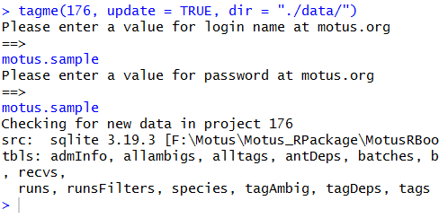

Chapter 3 - Accessing detections data
Source:vignettes/articles/03-accessing-data.Rmd
03-accessing-data.RmdIn this chapter we’ll walk through the motus data format, downloading, exporting and updating your detections, as well as dealing with metadata.
Some extra, more advanced topics not addressed in this chapter are available as supplementary articles.
Advanced Topics:
- WIP
.motusdata base tables- Working with GPS points
Before downloading your detection data, please ensure that you have no pending metadata issues through the online Data Issues page
This chapter will begin with an introduction to the structure of the detections database, followed by instructions on how to download and access the data. If you’re interested in a quick start, checkout the Getting Started article for a summary that includes how to download, select variables, clean data, and export data.
Data structure
Each tag detection database is stored as an SQLite (dplyr::src_sqlite) file with the extension ‘.motus’. The sqlite format was chosen because:
- it is flexible, allowing for many data formats.
- it is accessible from many software platforms (not just R).
- it is appendable, meaning the database can be created and updated on disk without having to read in and resave the entire contents. This will save time and computer memory when searching to see if any new detections are available for your project or receiver.
The .motus file contains a series of interrelated tables where data are stored in a condensed format to save memory. The following tables are included in your .motus file;
-
activity: data related to radio activity for each hour period (hourBin) at each antenna, including a count of the number of short runs used in helping identify false detections. -
admInfo: internal table used to keep track of your the motus package used to create your motus file, and the data version. -
antDeps: metadata related to antenna deployments, e.g., deployment height, angle, antenna type. -
batchRuns: metadata for runIDs and associated batchIDs -
batches: detection data for a given receiver and boot number. -
filters: metadata related to user created filters associated with the specified receiver.
-
gps: metadata related to Geographic Positioning System (GPS) position of receiver. -
hits: detection data at the level of individual hits. -
meta: metadata related to the project and datatype (tags vs. receivers) that are included in the .motus file -
nodeData: data related to nodes bybatchIDand time (ts) -
nodeDeps; metadata related to nodes -
projAmbig: metadata related to what projects have ambiguous tag detections -
projs: metadata related to projects, e.g., project name, principal investigator. -
pulseCounts: number of radio pulses measured on each antenna over 1 hour periods (hourBin). -
recvDeps: metadata related to receiver deployments, e.g., deployment date, location, receiver characteristics. -
recvs: metadata related to receiver serial number and associated Motus deviceID -
runs: detection data associated with a run (continuous detections of a unique tag on a given receiver). -
runsFilters: a list of runIDs associated with user created filters and assigned probabilities.
-
species: metadata related to species, e.g., unique identifier, scientific name, common name. -
tagAmbig: metadata related to ambiguous tags, e.g., ambigID and associated motusTagID -
tagDeps: metadata related to tag deployments, e.g., deployment date, location, and species. -
tagProp: metadata related to custom deployment properties entered by the principal investigator (e.g. body weight). -
tags: metadata related to tags, e.g., unique identifier, tag characteristics (e.g., burst interval).
In addition to these tables, there are also ‘virtual’ tables or ‘views’, which have been created through queries that merge data from the various tables into a single convenient ‘view’ that contains all of the fields you are likely to need. The following views are currently included in each .motus file:
-
allambigs: lists in long-data format each motusTagID (up to 6) associated with each negative ambigID. -
alltags: provides the full detection data for all tags, and all ambiguous (duplicate) tags, associated with your project. Ambiguous detections are repeated for each motusTagID represented by each ambigID.
-
alltagsGPS: same asalltagsbut includes GPS latitude, longitude and altitude (much slower to load on large databases).
Because the file is a dplyr::src_sqlite file, all of the dplyr functions can be used to filter and summarize the .motus database, without needing to first save the data as a flat file (a typical two-dimensional dataframe). The SQL format is very advantageous when you have a large file – the queries using SQL will be substantially faster than those done on a flat dataframe.
Database types
There are two types of tag detection databases available for download:
receiver database: includes all detections of any registered tags from a single receiver. A receiver database has a name like SG-1234BBBK5678.motus, where the name is the serial number of the receiver.
project database: includes all detections of your registered tags from across the Motus network. A tag project database has a name like project-123.motus, where the number is the Motus project ID.
These two databases correspond to the basic model of data sharing:
you get all detections of anyone’s tags by your receivers (i.e., one receiver tag database for each receiver you deploy).
you get all detections of your tags by anyone’s receivers (i.e., one project tag database for each of your Motus projects).
Load relevant R packages
Before we begin working with data, we need to load the required packages for this chapter. If you have not yet installed these packages (from github and CRAN) then please return to Chapter 2 - Installing Packages.
Set system environment
Set the system environment time zone to Greenwich Mean Time (UTC), to ensure that you are always working in UTC. This is a very important step, and should be part of every working session. If you fail to do this, then two problems can arise. Times are stored in the Motus database in UTC, and if you do not keep your environment in UTC, then they can be inadvertently changed during import. Second, if tags have been detected across multiple time zones, then they can also inadvertently be changed.
Sys.setenv(TZ = "UTC")Downloading tag detections
To import tag detections for your project or receiver, you need a numerical project id or character scalar receiver serial number.
The success of the Motus network is dependent on the timely upload of detection data from receivers, and on the maintenance of accurate and up to date tag and receiver metadata by collaborators. After downloading your data from the Motus server, users are encouraged to update detections and update metadata each time they run an analysis, because collaborators can add detection data and metadata at any time, and these could influence the completeness of your own detections data.
Be warned that large datasets can take some time (sometimes a few hours) to download from the Motus server when downloading for the first time. After the initial download, loading a .motus file into R and updating for any new data will be near instantaneous.
Download data for a project for the first time
All data downloads are completed using the tagme() function in the motus R package. This function will save an SQLite database to your computer with the extension “.motus”; see further details on data structure. The following parameters are available for the tagme() function:
-
projRecv: integer project number OR a character vector receiver serial number. -
new: if set toTRUE, it will create a new empty .motus file in your local directory. Do not use this parameter or set it toFALSEif you already have a .motus file. -
update: if set toTRUE, will download all available data to your existing .motus file. Must be set toTRUEon your first data download and any subsequent downloads if you wish to check for new data. Set toFALSEif you do not wish to check for new data (e.g., if working offline). -
dir: Your .motus data is automatically saved to your working directory, unless you specify a different location using this parameter. -
forceMeta: if set toTRUE, it will force an update of metadata to an existing .motus file.
Throughout these articles we use sample data which have been assigned to project 176.
Let’s get started by downloading data by project - this will include all detections of your tags on any receiver.
Note that when downloading data from the Motus server for the first time, you must specify new = TRUE and update = TRUE. You will also be prompted to login.
Unless the directory that you want your data saved in is stated explicitly within the function call, data will be downloaded to the current working directory.
Lets start by determining what our working directory is so we know where our file will be saved.
getwd()As this is the first time you are downloading data for project 176, set projRecv = 176, new = TRUE and update = TRUE. This will create a .motus file in your current working directory, which was shown above using getwd(). This will also create an SQL object in your R environment called sql.motus
sql.motus <- tagme(projRecv = 176, new = TRUE, update = TRUE)Alternatively you can specify a different location to save the data by entering your preferred filepath. In this example we save to our data folder using the dir argument. Note that ./ simply means ‘relative to the current folder’ (shown by getwd()).
sql.motus <- tagme(projRecv = 176, new = TRUE, update = TRUE, dir = "./data/")Note: You’ll need to use the username
motus.sampleand the passwordmotus.sampleto access this data (see login for more details)!
Using tagme() as shown above will download a file to your working or specified directory called project-176.motus for the sample data (the number in the file name corresponds to the project number). The progress of the download process should print on the console; if you are not seeing it, try scrolling down your screen while tagme() is running.
In the event that your connection to the Motus server fails prior to a complete download (e.g., due to a poor internet connection), use tagme(proj.num, update = TRUE) to continue the download from where it left off, ensuring you specify a directory if it is saved outside the working directory.
User Authentication
Login
The first time you call a function using the Motus R package, you will be asked to enter your motus.org username and password in the R console to authenticate your access to project data. This will only happen once per R session. If you do not have a Motus username and password, you can sign up to get one. Permission to access project data will then be granted by Motus staff or the project principal investigator.
When accessing the sample data you will need to login using username and password ‘motus.sample’ in the R console when prompted by the tagme() function (see the Download section above). It will look like this:

To download data for one of your own projects, change the project number to that of your own project in the tagme() call, and enter your own Motus login/password in the R console when prompted. If you are already logged in as the sample data user, you will need to first logout to download your own data.
Download data for a receiver for the first time
We could also download data by receiver through the same process as described above. This will provide you with all detections of any tags on the specified receiver. As there are no receivers registered to sample project 176, this call will not work. If you have a receiver registered to your own project, replace the receiver serial number in the tagme call below with the serial number for your own receiver, ensuring that you are logged in using your own credentials.
proj.num <- "SG-123BBBK1234"
sql.motus <- tagme(projRecv = proj.num, new = TRUE, update = TRUE)This will download a file to your working directory named SG-123BBBK1234.motus.
Some users may wish to work directly with the .motus SQLite file. However, since many users are more familiar with a ‘flat’ dataframe format, instructions to view the the data as a flat dataframe within R, and on how to export the flat file to .csv or .rds format, are included below.
Downloading multiple receivers at the same time
If you have a large number of receivers in your project, and wish to get receiver specific data for each one, rather than downloading them one by one as above, we can download them with a simple loop. Note that since the sample project doesn’t have any receivers associated with it, this script will not result in a download but you can try it with your own project if you have receivers.
# get a copy of the metadata only
sql.motus <- tagme(176, new = TRUE, update = FALSE, dir = "./data/")
metadata(sql.motus, 176)
tbl.recvDeps <- tbl(sql.motus, "recvDeps")
df.serno <- tbl.recvDeps %>%
filter(projectID == 176) %>%
select(serno) %>%
distinct() %>%
collect() %>%
as.data.frame()
# loop through each receiver (may take a while!)
for (row in 1:nrow(df.serno)) {
tagme(df.serno[row, "serno"], dir = "./data/", new = TRUE, update = TRUE)
}
# Note you can remove the dir argument if you want to save it to your working
# directory, just make sure that you use the same directory in both callsYou can also create a list of receivers you’d like to download if you don’t want to download project-wide receivers:
# create list of receivers you'd like to download
df.serno <- c("SG-AB12RPI3CD34", "SG-1234BBBK4321"))
# loop through each receiver (may take a while!), and save to the working directory
for (k in 1:length(df.serno)) {
tagme(df.serno[k], new = TRUE, update = TRUE)
}
# loop through each receiver (may take a while!), and save to a specified directory
for (k in 1:length(df.serno)) {
tagme(df.serno[k], dir = "/Users/zoecrysler/Downloads/",
new = TRUE, update = TRUE)
}Updating all .motus files within a directory
Once you have .motus files, you can also update them all by simply calling the tagme() function but leaving all arguments blank, apart from the directory:
Accessing downloaded detection data
Now that we’ve downloaded our data as an SQLite database and loaded it into an R object called sql.motus, we want to access the tables stored within. Detailed descriptions of all the tables stored in the .motus file can be found in the Data structure section.
You can also view the list of tables, and variables contained within those tables, using the DBI and RSQLite packages (these are automatically installed when you install motus).
library(DBI)
library(RSQLite)
# specify the filepath where your .motus file is saved, and the file name.
file.name <- dbConnect(SQLite(), "./data/project-176.motus")
# get a list of tables in the .motus file specified above.
dbListTables(file.name) ## [1] "activity" "admInfo" "allambigs" "alltags" "alltagsGPS"
## [6] "antDeps" "batchRuns" "batches" "clarified" "filters"
## [11] "gps" "hits" "meta" "nodeData" "nodeDeps"
## [16] "projAmbig" "projBatch" "projs" "recvDeps" "recvs"
## [21] "runs" "runsFilters" "species" "tagAmbig" "tagDeps"
## [26] "tagProps" "tags"
# get a list of variables in the "species" table in the .motus file.
dbListFields(file.name, "species") ## [1] "id" "english" "french" "scientific" "group"
## [6] "sort"The virtual table alltags contains the detection data, along with most metadata variables that users need from the various underlying .motus tables. We access the tables using the tbl() function from the dplyr package which we installed in Chapter 2 and loaded at the start of this chapter.
For example, retrieve the virtual alltags table from our sql.motus SQLite file.
tbl.alltags <- tbl(sql.motus, "alltags")We now have a new tbl.alltags object in R. The underlying structure of these tables is a list of length 2:
str(tbl.alltags)## List of 2
## $ src:List of 2
## ..$ con :Formal class 'SQLiteConnection' [package "RSQLite"] with 8 slots
## .. .. ..@ ptr :<externalptr>
## .. .. ..@ dbname : chr "/home/runner/work/motus/motus/vignettes/articles/data/project-176.motus"
## .. .. ..@ loadable.extensions: logi TRUE
## .. .. ..@ flags : int 70
## .. .. ..@ vfs : chr ""
## .. .. ..@ ref :<environment: 0x556171e3f6e0>
## .. .. ..@ bigint : chr "integer64"
## .. .. ..@ extended_types : logi FALSE
## ..$ disco: NULL
## ..- attr(*, "class")= chr [1:4] "src_SQLiteConnection" "src_dbi" "src_sql" "src"
## $ ops:List of 2
## ..$ x : 'ident' chr "alltags"
## ..$ vars: chr [1:62] "hitID" "runID" "batchID" "ts" ...
## ..- attr(*, "class")= chr [1:3] "op_base_remote" "op_base" "op"
## - attr(*, "class")= chr [1:5] "tbl_SQLiteConnection" "tbl_dbi" "tbl_sql" "tbl_lazy" ...The first part of the list, src, is a list that provides details of the SQLiteConnection, including the directory where the database is stored. The second part is a list that includes the underlying table. Thus, the R object alltags is a virtual table that stores the database structure and information required to connect to the underlying data in the .motus file. As stated above, the advantage of storing the data in this way is that it saves memory when accessing very large databases, and functions within the dplyr package can be used to manipulate and summarize the tables before collecting the results into a typical ‘flat’ format dataframe.
If you want to use familiar functions to get access to components of the underlying data frame, then use the collect() function. For example, to look at the names of the variables in the alltags table:
## [1] "hitID" "runID" "batchID" "ts"
## [5] "tsCorrected" "sig" "sigsd" "noise"
## [9] "freq" "freqsd" "slop" "burstSlop"
## [13] "done" "motusTagID" "ambigID" "port"
## [17] "nodeNum" "runLen" "motusFilter" "bootnum"
## [21] "tagProjID" "mfgID" "tagType" "codeSet"
## [25] "mfg" "tagModel" "tagLifespan" "nomFreq"
## [29] "tagBI" "pulseLen" "tagDeployID" "speciesID"
## [33] "markerNumber" "markerType" "tagDeployStart" "tagDeployEnd"
## [37] "tagDepLat" "tagDepLon" "tagDepAlt" "tagDepComments"
## [41] "tagDeployTest" "fullID" "deviceID" "recvDeployID"
## [45] "recvDeployLat" "recvDeployLon" "recvDeployAlt" "recv"
## [49] "recvDeployName" "recvSiteName" "isRecvMobile" "recvProjID"
## [53] "recvUtcOffset" "antType" "antBearing" "antHeight"
## [57] "speciesEN" "speciesFR" "speciesSci" "speciesGroup"
## [61] "tagProjName" "recvProjName"If you want access to GPS data you can either use the alltagsGPS view, or, after filtering your data (see Chapter 5 - Data cleaning and the article In-depth detections filtering) you can use the getGPS() function (see Working with GPS points).
Converting to flat data
To convert the alltags view or other table in the .motus file into a typical ‘flat’ format, i.e., with every record for each field filled in, use the collect() and as.data.frame() functions. The output can then be further manipulated, or used to generate a RDS file of your data for archiving or export.
df.alltags <- tbl.alltags %>%
collect() %>%
as.data.frame()Now we have flat data of the alltags table called df.alltags. We can look at some metrics of the file:
names(df.alltags) # field names
str(df.alltags) # structure of your data fields
head(df.alltags) # prints the first 6 rows of your df to the console
summary(df.alltags) # summary of each column in your dfNote that the format of the time stamp (ts) field is numeric and represents seconds since January 1 1970. We recommend that when you transform your tables into flat dataframes, that you format the time stamp using the lubridate package at that time, e.g.:
df.alltags <- tbl.alltags %>%
collect() %>%
as.data.frame() %>% # for all fields in the df (data frame)
mutate(ts = as_datetime(ts, tz = "UTC", origin = "1970-01-01"))
# the tz = "UTC" is not necessary here, provided you have set your system time to UTC
# ... but it serves as a useful reminder!Note that time stamps can only be manipulated in this way after collecting the data into a flat dataframe.
If you want to load only part of your entire virtual table (e.g. certain fields, certain tags, or all tags from a specified project or species), you can use dplyr functions to filter the data before collecting into a dataframe. Some examples are below:
- To select certain variables:
# to grab a subset of variables, in this case a unique list of Motus tag IDs at
# each receiver and antenna.
df.alltagsSub <- tbl.alltags %>%
select(recv, port, motusTagID) %>%
distinct() %>%
collect() %>%
as.data.frame() - To select certain tag IDs:
# filter to include only motusTagIDs 16011, 23316
df.alltagsSub <- tbl.alltags %>%
filter(motusTagID %in% c(16011, 23316)) %>%
collect() %>%
as.data.frame() %>%
mutate(ts = as_datetime(ts, tz = "UTC", origin = "1970-01-01")) - To select a specific species:
# filter to only Red Knot (using speciesID)
df.4670 <- tbl.alltags %>%
filter(speciesID == 4670) %>%
collect() %>%
as.data.frame() %>%
mutate(ts = as_datetime(ts, tz = "UTC", origin = "1970-01-01"))
# filter to only Red Knot (using English name)
df.redKnot <- tbl.alltags %>%
filter(speciesEN == "Red Knot") %>%
collect() %>%
as.data.frame() %>%
mutate(ts = as_datetime(ts, tz = "UTC", origin = "1970-01-01")) Using dplyr, your virtual table can also be summarized before converting to a flat file. For example, to find the number of different detections for each tag at each receiver:
In later chapter(s) we will show you additional ways of summarizing and working with your data.
Exporting detections
A good workflow is to create a script that deals with all your data issues (as described in later chapters), and then saves the resulting ‘flat’ dataframe to CSV or RDS for re-use. If you do this, you can quickly start an analysis or visualization session from a known (and consistent) starting point. We use an .rds file, which preserves all of the associated R data structures (such as time stamps).
saveRDS(df.alltags, "./data/df_alltags.rds") Some users may also want to export the flat dataframe into a .csv file for analysis in other programs. This can easily be done with the following code. Note that it does not preserve time stamps:
write.csv(df.alltags, "./data/df_alltags.csv")Updating a database
Updating detections
As you or other users upload data to our server, you may have additional tag detections that weren’t present in your initial data download. Since the .motus file is a SQLite database, you can update your existing file with any newly available data, rather than doing a complete new download of the entire database. To open and update a detections database that already exists (has been downloaded previously), we use the tagme() function but set new = FALSE:
sql.motus <- tagme(projRecv = 176, new = FALSE, update = TRUE, dir = "./data/") ## Checking for new data in project 176## activity: 1 new batch records to check## batchID 1977125 (# 1 of 1): got 156 activity records## batchID 1977125 (# 1 of 1): got 0 activity records## Downloaded 156 activity records## nodeData: 0 new batch records to checkIf you are working offline, and simply want to open an already downloaded database without connecting to the server to update, use new = FALSE and update = FALSE:
# use dir = to specify a directory
sql.motus <- tagme(projRecv = 176, new = FALSE, update = FALSE, dir = "./data")Checking for new detections
To check if new data are available for your project or receiver without downloading the data, you can use the tellme() function, which returns a list with:
-
numHits: number of new tag detections. -
numBytes: approximate uncompressed size of data transfer required, in megabytes. -
numRuns: number of runs of new tag detections, where a run is a series of continuous detections for a tag on a given antenna. -
numBatches: number of batches of new data. -
numGPS: number of GPS records of new data.
The following assumes that a local copy of the database already exists:
tellme(projRecv = 176) # If db is in the working directory
tellme(projRecv = 176, dir = "./data/") # To specify a different directoryTo check how much data is available for a project but you do not have a database for it, use the ‘new’ parameter:
tellme(projRecv = 176, new = TRUE)Updating metadata
Tag and receiver metadata are automatically merged with tag detections when data are downloaded. However, if metadata have been updated since your initial download, you can force re-import of the metadata when updating a database by running:
sql.motus <- tagme(projRecv = 176, forceMeta = TRUE)Import full tag and receiver metadata
When you use tagme() to download or update your .motus file, you are provided with the metadata for:
- any tags registered to your project which have detections;
- tags from other projects which are associated with ambiguous detections (see Chapter 5 - Data Cleaning in your data;
- receivers that your tags and any ambiguous tags were detected on.
In many instances, you will want access to the full metadata for all tags and receivers across the network, e.g., to determine how many of your deployed tags were not detected, or to plot the location of stations with and without detections. The metadata() function can be used to add the complete Motus metadata to your .motus file. The metadata function only needs to be run once, but we suggest that you re-import the metadata occasionally to ensure that you have the most recent and up-to-date information.
Running the metadata function as follows will add the appropriate metadata from across the network (all tags and all receivers) to the recvDeps and tagDeps tables in your .motus file:
# access all tag and receiver metadata for all projects in the network.
metadata(sql.motus) Alternatively, you can load metadata for a specific project(s) using:
Ensure that you have the correct database version
When you call the tagme function to load the sqlite database, the version of the R package used to download the data is stored in an admInfo table. Over time, changes will be made to the functionality of the R package that may require adding new tables, views or fields to the database. If your version of the database does not match the version of the R package, some of the examples contained in these articles may not work. The following call will check that your database has been updated to the version matching the current version of the motus R package. If your database does not match the most current version of the R package, use tagme() with update = TRUE to update your database to the correct format. Refer to Appendix B if the checkVersion() call returns a warning.
checkVersion(sql.motus)R object naming convention
Throughout this chapter and the rest of the articles, we name R objects according to their structure and the source of the data contained in the object. So, SQLite objects will be prefixed with sql., virtual table objects will be prefixed with tbl., and dataframe objects will be prefixed with df.; the rest of the name will include the name of the .motus table that the data originates from.
The following code assumes you have already downloaded the sample data and do not need to update it; if you have not downloaded the data, see the section on downloading data for the first time for instructions on initial download.
# SQLite R object, which links to the .motus file:
sql.motus <- tagme(176, update = TRUE, dir = "./data")
# virtual table object of the alltags table in the sample.motus file:
tbl.alltags <- tbl(sql.motus, "alltags")
df.alltags <- tbl.alltags %>%
collect() %>%
as.data.frame() %>% # dataframe ("flat") object of alltags table
mutate(ts = as_datetime(ts, tz = "UTC", origin = "1970-01-01"))